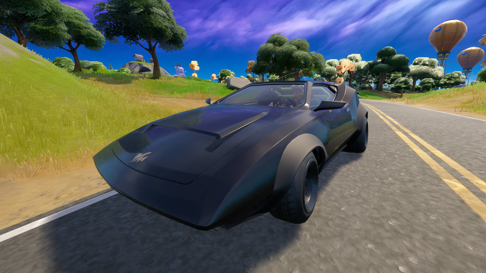
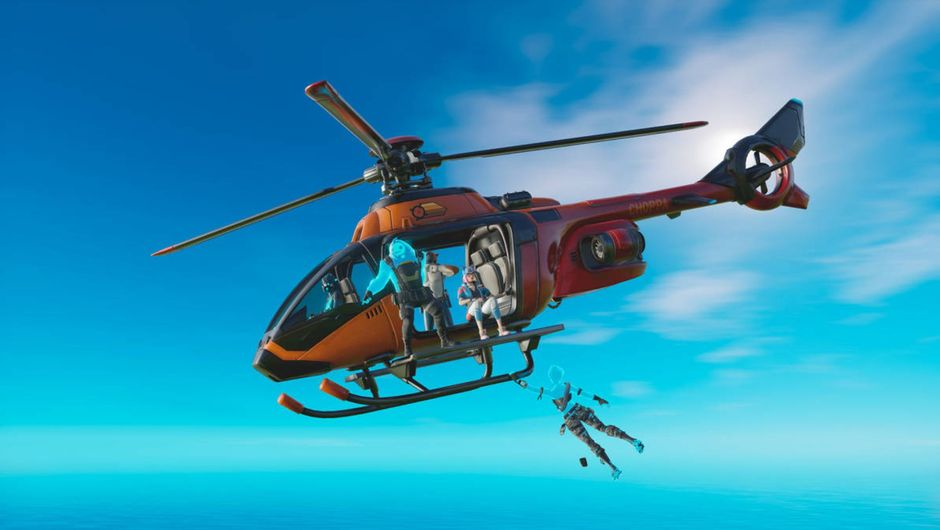
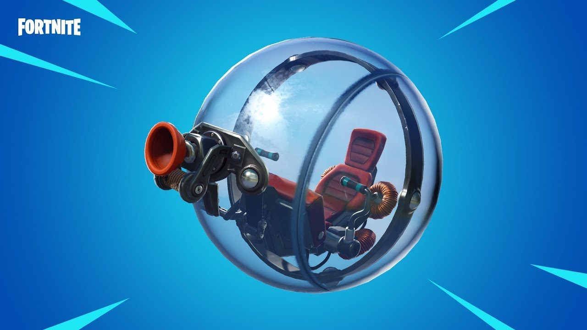

Vehicles & Mobility Options
- Whiplash Car
-

A fast, stylish sports car with high speed but low off-road performance. Best used on paved roads. Boost for extra thrust. Although it lacks durability, its agility on smooth terrain allows players to reposition rapidly during early rotations or outrun the storm circle. Ideal for quick getaways or stylish pursuits in urban zones like Mega City or Tilted Towers.
- Motorboat
-

Good for river rotations and open sea attacks. Comes equipped with a missile launcher. Useful for fast mobility and escaping storm damage via waterways. Also allows players to destroy builds and surprise enemies camping near shores. It’s one of the few vehicles that combines transport with offensive capabilities, making it deadly in duos and squads.
- Choppa
-

Air mobility vehicle. No weapons, but extremely good for rotations, scouting, and height advantage. Beware: you're a flying target! Choppas allow full-team rotations across large sections of the map, and while vulnerable, they provide excellent escape or observation points, especially in final zones where vertical control is critical for success.
- Ballers
-

A unique mobility vehicle that combines a grappler with a hamster ball. Great for swinging across terrain and escaping tough situations. Players can latch onto trees, buildings, or cliffs to rapidly reposition or escape combat, all while being protected by the ball's shield. Ballers are stealthy, fun, and effective for solo players and stealth missions.